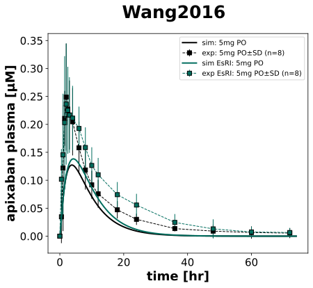
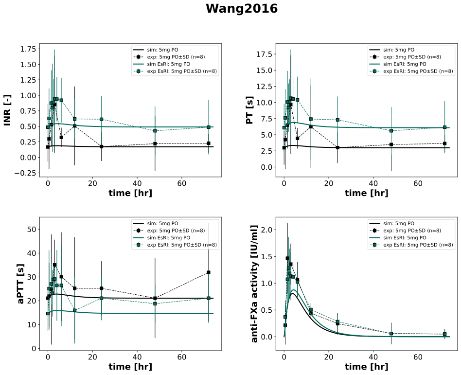
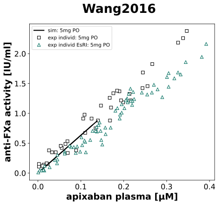

|
 |
|
 |
|
 |
../../../../experiments/studies/wang2016.py
import math
from typing import Dict
from sbmlsim.data import DataSet, load_pkdb_dataframe
from sbmlsim.fit import FitMapping, FitData
from sbmlutils.console import console
from pkdb_models.models.apixaban.experiments.base_experiment import (
ApixabanSimulationExperiment,
)
from pkdb_models.models.apixaban.experiments.metadata import (
Tissue, Route, Dosing, ApplicationForm, Health, Fasting, ApixabanMappingMetaData
)
from sbmlsim.plot import Axis, Figure
# noqa: E402
from sbmlsim.simulation import Timecourse, TimecourseSim
from pkdb_models.models.apixaban.helpers import run_experiments
class Wang2016(ApixabanSimulationExperiment):
"""Simulation experiment of Wang2016."""
colors = {
"healthy": "black",
"esrd_P1": "#006d5e",
"esrd_P2": "#006d5e",
}
markers = {
"healthy": "s",
"esrd_P1": "*",
"esrd_P2": "^",
}
bodyweights = { # [kg]
"healthy": 87.4,
"esrd_P1": 92.5, # post-apixaban hemodialysis
"esrd_P2": 92.5, # pre-apixaban hemodialysis
}
bodyheights = {
"healthy": math.sqrt(87.4 / 29.7),
"esrd_P1": math.sqrt(92.5 / 29.7), # post-apixaban hemodialysis
"esrd_P2": math.sqrt(92.5 / 29.7), # pre-apixaban hemodialysis
}
inrs = {
"healthy": 0.17,
"esrd_P1": 0.43, # post-apixaban hemodialysis
"esrd_P2": 0.49, # pre-apixaban hemodialysis
}
pts = {
"healthy": 2.98,
"esrd_P1": 5.50, # post-apixaban hemodialysis
"esrd_P2": 6.09, # pre-apixaban hemodialysis
}
aptts = {
"healthy": 21.06,
"esrd_P1": 25.69, # post-apixaban hemodialysis
"esrd_P2": 14.61, # pre-apixaban hemodialysis
}
renal_functions = {
"healthy": 1.0,
"esrd_P1": 10.5 / 101.0, # "End stage renal disease": 10.5 / 101.0, # 0.1
"esrd_P2": 10.5 / 101.0,
}
groups = [
"healthy",
# "esrd_P1",
"esrd_P2"
]
infos_pk = {
"[Cve_api]": "apixaban",
}
infos_pd = {
"INR": "inr",
"PT": "pt",
"aPTT": "aptt",
"antiXa_activity": "xa",
}
# info_figpd_scatter = {
# "antiXa_vs_apixaban": "antiXa_activity",
# }
def datasets(self) -> Dict[str, DataSet]:
dsets = {}
for fig_id, group_id in zip(["Fig1", "Fig2", "Fig3"],
["label", "label", "x_label"]):
df = load_pkdb_dataframe(f"{self.sid}_{fig_id}", data_path=self.data_path)
for label, df_label in df.groupby(group_id):
dset = DataSet.from_df(df_label, self.ureg)
if label.startswith("apixaban_"):
if fig_id == "Fig3":
dset.unit_conversion("x", 1 / self.Mr.api)
else:
dset.unit_conversion("mean", 1 / self.Mr.api)
dsets[label] = dset
# console.print("datasets:", list(dsets.keys()))
return dsets
def simulations(self) -> Dict[str, TimecourseSim]:
Q_ = self.Q_
tcsims: Dict[str, TimecourseSim] = {}
for group in self.groups:
tcsims[group] = TimecourseSim([
Timecourse(
start=0,
end=74 * 60, # [min]
steps=500,
changes={
**self.default_changes(),
"PODOSE_api": Q_(5, "mg"),
"BW": Q_(self.bodyweights[group], "kg"),
"KI__f_renal_function": Q_(self.renal_functions[group], "dimensionless"),
"INR_ref": Q_(self.inrs[group], "dimensionless"),
"aPTT_ref": Q_(self.aptts[group], "second"),
"PT_ref": Q_(self.pts[group], "second"),
"HEIGHT": Q_(self.bodyheights[group], "m"),
},
)
])
return tcsims
# Fit Mappings
def fit_mappings(self) -> Dict[str, FitMapping]:
mappings: Dict[str, FitMapping] = {}
infos = {
**self.infos_pk,
**self.infos_pd,
}
for group in self.groups:
for sid, name in infos.items():
mappings[f"fm_{name}_{group}"] = FitMapping(
self,
reference=FitData(
self,
dataset=f"{name}_{group}",
xid="time",
yid="mean",
yid_sd="mean_sd",
count="count",
),
observable=FitData(
self,
task=f"task_{group}",
xid="time",
yid=sid,
),
metadata=ApixabanMappingMetaData(
tissue=Tissue.PLASMA,
route=Route.PO,
application_form=ApplicationForm.TABLET,
dosing=Dosing.SINGLE,
health=Health.HEALTHY if group == "healthy" else Health.RENAL_IMPAIRMENT,
fasting=Fasting.NR,
),
)
return mappings
def figures(self) -> Dict[str, Figure]:
return {
**self.figure_pk(),
**self.figure_pd(),
**self.figure_scatter(),
}
def figure_pk(self) -> Dict[str, Figure]:
fig = Figure(
experiment=self,
sid="PK",
name=f"{self.__class__.__name__}",
height=self.panel_height,
width=self.panel_width * 0.87,
)
plots = fig.create_plots(
xaxis=Axis(self.label_time, unit=self.unit_time),
legend=True,
)
for kp, sid in enumerate(self.infos_pk):
plots[kp].set_yaxis(self.labels[sid], unit=self.units[sid])
for group in self.groups:
for kp, sid in enumerate(self.infos_pk):
name = self.infos_pk[sid]
# Simulation
plots[kp].add_data(
task=f"task_{group}",
xid="time",
yid=sid,
label="sim: 5mg PO" if group == "healthy" else "sim EsRI: 5mg PO",
color=self.colors[group]
)
# Data
plots[kp].add_data(
dataset=f"{name}_{group}",
xid="time",
yid="mean",
yid_sd="mean_sd",
count="count",
label="exp: 5mg PO" if group == "healthy" else "exp EsRI: 5mg PO",
color=self.colors[group]
)
return {fig.sid: fig}
def figure_pd(self) -> Dict[str, Figure]:
fig = Figure(
experiment=self,
sid="PD",
name=f"{self.__class__.__name__}",
num_cols=2,
num_rows=2,
height=self.panel_height * 2,
width=self.panel_width * 2,
)
plots = fig.create_plots(
xaxis=Axis(self.label_time, unit=self.unit_time),
legend=True,
)
for kp, sid in enumerate(self.infos_pd):
plots[kp].set_yaxis(self.labels[sid], unit=self.units[sid])
for kp, sid in enumerate(self.infos_pd):
name = self.infos_pd[sid]
for group in self.groups:
# simulation
plots[kp].add_data(
task=f"task_{group}",
xid="time",
yid=sid,
label="sim: 5mg PO" if group == "healthy" else "sim EsRI: 5mg PO",
color=self.colors[group],
)
# data
plots[kp].add_data(
dataset=f"{name}_{group}",
xid="time",
yid="mean",
yid_sd="mean_sd",
count="count",
label="exp: 5mg PO" if group == "healthy" else "exp EsRI: 5mg PO",
color=self.colors[group],
)
return {fig.sid: fig}
def figure_scatter(self) -> Dict[str, Figure]:
fig = Figure(
experiment=self,
sid="PD_scatter",
name=f"{self.__class__.__name__}",
height=self.panel_height,
width=self.panel_width * 0.87,
)
plots = fig.create_plots(
xaxis=Axis(self.labels["[Cve_api]"], unit=self.units["[Cve_api]"]),
legend=True,
)
plots[0].set_yaxis(self.labels["antiXa_activity"], unit=self.units["antiXa_activity"], scale="linear")
is_legend = True
for group in self.groups:
plots[0].add_data(
task=f"task_{group}",
xid="[Cve_api]",
yid="antiXa_activity",
label="sim: 5mg PO" if is_legend else "",
color="black"
)
is_legend = False
plots[0].add_data(
dataset=f"apixaban_vs_xa_{group}",
xid="x",
yid="y",
label="exp individ EsRI: 5mg PO" if group == "esrd_P2" else "exp individ: 5mg PO",
linestyle="",
color="white",
markeredgecolor=self.colors[group],
marker=self.markers[group],
)
return {fig.sid: fig}
if __name__ == "__main__":
run_experiments(Wang2016, output_dir=Wang2016.__name__)
{kind=link}
{kind=link}
{kind=link}